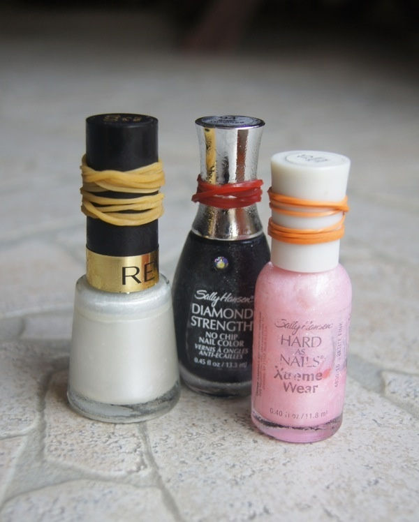
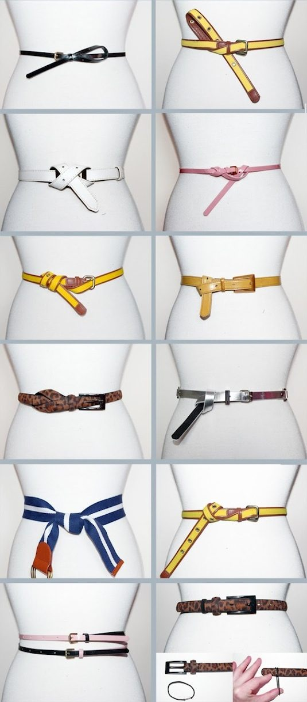

8 Life Hacks For Girls Part 1

These exist because, well, sometimes it's really hard being a girl. Besides, guys can use some of these, too. Winning. These exist because, well, sometimes it's really hard being a girl. Besides, guys can use some of these, too. Winning.
1. How To Tuck Your Jeans Into Boots
2.Can't Open A Nail Polish Bottle?
By wrapping a rubber band around the bottle, you get extra grip. That also means you can eat chips at the same time. 1 for women, 0 for nail polish bottles.
3.How To Beat Key Rings
4.This:
5.Wear A Belt In A Bunch Of Different Ways

6.Pony Tail Need More Lift?
7.No More Smelly Shoes
This is especially great for the summer, when your feet are sweaty. By creating baking soda sachets, you don't ever have to deal with stinky shoes again. Best part? It's super cheap
8.Ice Cube Tray = Jewelry Organizer
So, you have your accessories organized but what about jewelry? Easy: just use an ice cube tray. It's not fancy, but it gets the job done and great for minimalists.